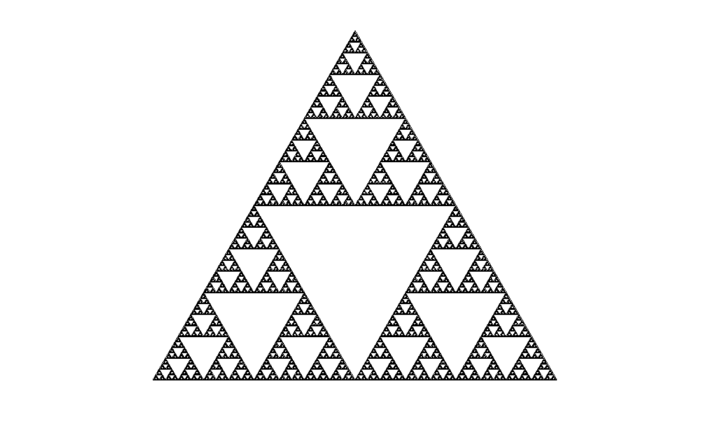

Fractal gallery
Sierpinski Triangle (Vector)
Begin with one triangle. Open a hole in its heart, then repeat.
This version is drawn directly from geometric primitives. wxChaos outlines an equilateral triangle, joins the midpoints of its sides, and leaves the upside-down triangle in the center empty. The same gesture is repeated inside each of the three surviving corners.

Watch the triangle learn its shape
Set the iteration count to one. There is no fractal yet, only a triangle with a single central hole.
Advance one iteration at a time. Successive generations add one central hole, then three smaller holes, then nine, then twenty-seven.
Zoom into a corner after several steps. More iterations reveal the same construction at scales that were previously too small to see.
What does its dimension mean?
A smooth line has dimension 1 and a filled region has dimension 2. The Sierpinski triangle sits between them: it branches through the plane more richly than a line, but its missing centers keep it from becoming a surface.
Open Tools > Dimension calculator, choose Sierpinski Triangle (Vector), and press Calculate. wxChaos covers the rendered set with boxes at several scales and estimates how quickly the number of occupied boxes grows as those boxes become smaller.
Why the dimension is log(3) / log(2)
Each stage contains three copies of the whole, and each copy is scaled to one half of the original. A self-similar dimension \(D\) therefore satisfies \(3(1/2)^D=1\), giving \(D=\log(3)/\log(2)\approx1.585\). For this ideal self-similar set, that value agrees with the box-counting dimension estimated by the Dimension calculator.
Two ways to meet the same silhouette
The alternative Sierpinski Triangle page describes a different wxChaos renderer. It tests points with a complex-plane iteration. This vector version constructs the geometry explicitly with line segments. They arrive at a familiar triangular set by very different routes.